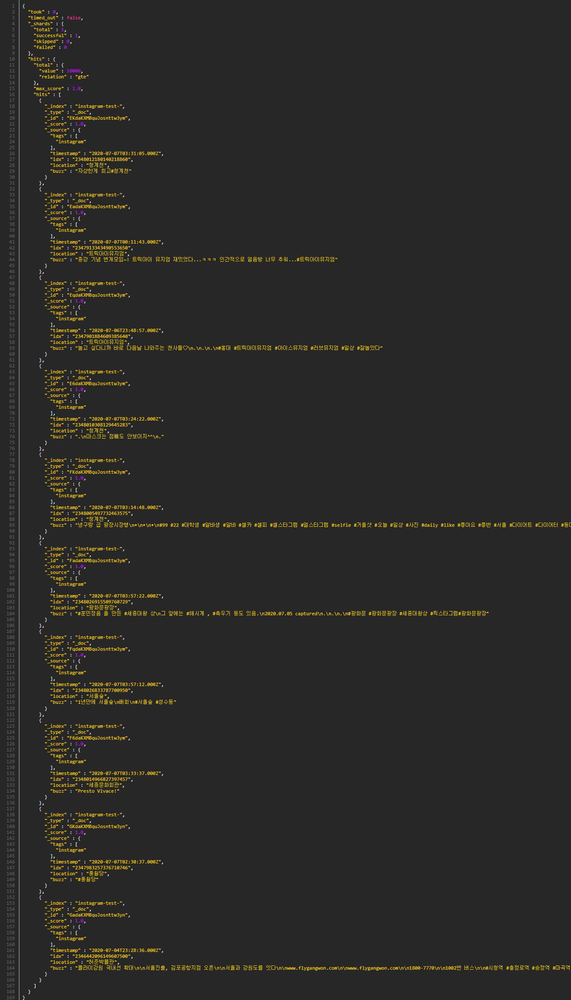

인구 밀집도 기반데이터
Open Api
http://elasticsearch:9200/SNS/_search?fromDate=YYYY-MM-DDThh:mm:ss.SSS[Z]&toDate=YYYY-MM-DDThh:mm:ss.SSS&location=탑골공원
검색범위 최소시간 : 기준출발시간 | 검색범위 최대시간 : 기준도착시간 | location : 검색위치
